Tier 0 — Survival & Gathering¶
435 recipes
Butchering Block 12
RB
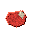
raw bear meat×7 TRthick raw hide×3 RM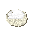
raw mixed animal fat×6 LRlarge raw bone×3 CL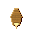
claw×2 ME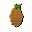
mixed edible offal×1 IO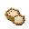
inedible offal×1 FAfresh animal blood×2BBblack bear carcass×1 HS hafted steel knife×1 → RBraw bear meat×7 TRthick raw hide×3 RMraw mixed animal fat×6 LRlarge raw bone×3 CLclaw×2 MEmixed edible offal×1 IOinedible offal×1 FAfresh animal blood×2
hafted steel knife×1 → RBraw bear meat×7 TRthick raw hide×3 RMraw mixed animal fat×6 LRlarge raw bone×3 CLclaw×2 MEmixed edible offal×1 IOinedible offal×1 FAfresh animal blood×2
Breaking down a bear is heavy, slow work -- but the fat yield alone makes it worthwhile.
t0_butcher_bear_carcass_fullRB
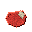
raw beef×12 RMraw mixed animal fat×4 RC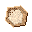
raw cow hide×1 LRlarge raw bone×4 SRsmall raw bone×2 MEmixed edible offal×2 IOinedible offal×1 FAfresh animal blood×2 RC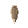
raw cattle horn×2 HKhoof keratin chunk×4 DS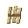
dried sinew bundle×2CC hafted iron knife×1 → RBraw beef×12 RMraw mixed animal fat×4 RCraw cow hide×1 LRlarge raw bone×4 SRsmall raw bone×2 MEmixed edible offal×2 IOinedible offal×1 FAfresh animal blood×2 RCraw cattle horn×2 HKhoof keratin chunk×4 DSdried sinew bundle×2
hafted iron knife×1 → RBraw beef×12 RMraw mixed animal fat×4 RCraw cow hide×1 LRlarge raw bone×4 SRsmall raw bone×2 MEmixed edible offal×2 IOinedible offal×1 FAfresh animal blood×2 RCraw cattle horn×2 HKhoof keratin chunk×4 DSdried sinew bundle×2
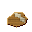
cow carcass×1 HIHang and break down a cow carcass into quarters; trim steaks, salvage hide, fat, bones, horns and sinew.
t0_butcher_cow_carcass_fullRMraw mutton×6 RMraw mixed animal fat×3 RS
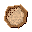
raw sheep pelt×1 RWraw wool fleece×1 LRlarge raw bone×2 SRsmall raw bone×1 MEmixed edible offal×1 IOinedible offal×1 FAfresh animal blood×1 DSdried sinew bundle×1 HKhoof keratin chunk×4SCsheep carcass×1 HB hafted bronze knife×1 → RMraw mutton×6 RMraw mixed animal fat×3 RSraw sheep pelt×1 RWraw wool fleece×1 LRlarge raw bone×2 SRsmall raw bone×1 MEmixed edible offal×1 IOinedible offal×1 FAfresh animal blood×1 DSdried sinew bundle×1 HKhoof keratin chunk×4
hafted bronze knife×1 → RMraw mutton×6 RMraw mixed animal fat×3 RSraw sheep pelt×1 RWraw wool fleece×1 LRlarge raw bone×2 SRsmall raw bone×1 MEmixed edible offal×1 IOinedible offal×1 FAfresh animal blood×1 DSdried sinew bundle×1 HKhoof keratin chunk×4
Dress a sheep, peel the pelt with fleece intact and trim usable mutton, fat, bone, sinew and hooves.
t0_butcher_sheep_carcass_fullRP
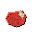
raw pork×5 RMraw mixed animal fat×3 TRthick raw hide×1 LRlarge raw bone×2 TU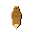
tusk×1 MEmixed edible offal×1 IOinedible offal×1 FAfresh animal blood×1 HKhoof keratin chunk×4WBhafted bronze knife×1 → RPraw pork×5 RMraw mixed animal fat×3 TRthick raw hide×1 LRlarge raw bone×2 TUtusk×1 MEmixed edible offal×1 IOinedible offal×1 FAfresh animal blood×1 HKhoof keratin chunk×4
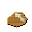
wild boar carcass×1 HBField dress a boar for pork belly, lard fat, thick hide, tusks and hooves.
t0_butcher_boar_carcass_fullRPraw poultry×2 RMraw mixed animal fat×1 LFlarge feather bundle×1 DFdown fill feathers×1 MB
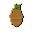
mixed bird giblets×1 SRsmall raw bone×1 IOinedible offal×1 FAfresh animal blood×1GBgame bird carcass×1 HS hafted stone knife×1 → RPraw poultry×2 RMraw mixed animal fat×1 LFlarge feather bundle×1 DFdown fill feathers×1 MBmixed bird giblets×1 SRsmall raw bone×1 IOinedible offal×1 FAfresh animal blood×1
hafted stone knife×1 → RPraw poultry×2 RMraw mixed animal fat×1 LFlarge feather bundle×1 DFdown fill feathers×1 MBmixed bird giblets×1 SRsmall raw bone×1 IOinedible offal×1 FAfresh animal blood×1
Pluck the feathers, clean out the insides, and cut a small game bird into pieces -- keep the feathers, soft down, edible organs (giblets) and a little fat.
t0_butcher_bird_carcass_fullOCowl carcass×1 HShafted stone knife×1 → RPraw poultry×1 LFlarge feather bundle×2 SRsmall raw bone×1 IOinedible offal×1
Pluck and dress an owl -- large flight feathers are the primary yield; little meat.
t0_butcher_owl_carcass_fullRCrabbit carcass×1 HShafted stone knife×1 → RRraw rabbit meat×2 LRlight raw hide×1 SRsmall raw bone×2 IOinedible offal×1
Skin, gut and joint a rabbit -- two lean cuts, a small hide, and bones.
t0_butcher_rabbit_carcass_fullRChafted stone knife×1 → RRraw raccoon meat×2 LRlight raw hide×2 SRsmall raw bone×2 IOinedible offal×1
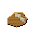
raccoon carcass×1 HSDress a raccoon for dark, gamey meat and a decent light hide.
t0_butcher_raccoon_carcass_fullSCsquirrel carcass×1 HShafted stone knife×1 → RSraw squirrel meat×1 LRlight raw hide×1 SRsmall raw bone×2
Quick skin and dress; barely a snack of meat but the hide is clean.
t0_butcher_squirrel_carcass_fullRVraw venison×8 RMraw mixed animal fat×2 RD
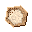
raw deer hide×1 LRlarge raw bone×3 SRsmall raw bone×1 MEmixed edible offal×1 IOinedible offal×1 FAfresh animal blood×1 RD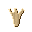
raw deer antler×1 DSdried sinew bundle×2 HKhoof keratin chunk×4DChafted bronze knife×1 → RVraw venison×8 RMraw mixed animal fat×2 RDraw deer hide×1 LRlarge raw bone×3 SRsmall raw bone×1 MEmixed edible offal×1 IOinedible offal×1 FAfresh animal blood×1 RDraw deer antler×1 DSdried sinew bundle×2 HKhoof keratin chunk×4
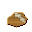
deer carcass×1 HBField dress and quarter a deer; save loins, haunches, hide, antlers, leg sinew and hooves.
t0_butcher_deer_carcass_fullRFred fox carcass×1 HShafted stone knife×1 → FPfox pelt×1 RFraw fox meat×2 SRsmall raw bone×2 IOinedible offal×1
Carefully skin a fox to keep the pelt intact, then dress for lean, dark meat.
t0_butcher_fox_carcass_fullWCwolf carcass×1 HBhafted bronze knife×1 → WPwolf pelt×1 RWraw wolf meat×3 LRlarge raw bone×1 FAfang×1 IOinedible offal×1
Break down a wolf for its thick pelt, tough lean meat, large bones, and a fang.
t0_butcher_wolf_carcass_fullBy hand 1
Dip the bucket into a nearby stream, pond or spring to carry water back to camp.
t0_fill_bark_bucketCamp Marker 56
Score, bend and lash bark strips into a watertight bark bucket with a simple handle.
t0_weave_bark_bucketWrap a straw core in hide and stitch it into a roll that can survive daily use.
t0_sew_bedroll_basicPack dry thatch and fibres into a simple roll that insulates you from the ground.
t0_pack_bedroll_strawSquare up a dry log, bed it on stones and lash it tight into a heavy chopping block.
t0_build_butchering_block_basicSF stone fire ring×1 DF
stone fire ring×1 DF dry fiber tinder×2 DK
dry fiber tinder×2 DK dry kindling sticks×4 SD
dry kindling sticks×4 SD small dry log×2 → SC
small dry log×2 → SC survival campfire×1
survival campfire×1
Lay tinder, kindling and dry logs inside a stone ring to form a reusable hearth.
t0_build_campfire_survivalSDsmall dry log×6 MD medium dry log×2 BB
medium dry log×2 BB branch bundle×2 LD
branch bundle×2 LD loose dirt×6 RR
loose dirt×6 RR rounded river stone×4 → EMearth-mound charcoal clamp×1
rounded river stone×4 → EMearth-mound charcoal clamp×1
Stack and cover a wood pile with dirt to form a simple earth-mound charcoal clamp.
t0_build_charcoal_clamp_earth_moundKnead the air out of the clay and shape it into a small pot. Unfired clay like this is called greenware.
t0_form_clay_potHand-build a larger clay shape. This makes two unfired (greenware) pots, ready to be hardened in a kiln.
t0_form_clay_pot_largeTrim a hide and punch holes so it can be tied as a rough weather cloak.
t0_sew_cloak_raggedLean and lash branch bundles into a simple A-frame that can accept debris cover.
t0_build_debris_shelter_frameLayer bundles of reeds and grass over the frame to shed rain and hold warmth.
t0_build_debris_shelter_lean_toLash uprights and crossbars into a rack that can hold meat, hides and cordage.
t0_build_drying_rack_survivalBuild a simple updraft kiln from clay, earth, and stone.
t0_build_earthen_kiln_updraftArrange smooth cobbles into a ring that keeps coals and sparks contained.
t0_build_fire_ringNotch two dry sticks together for the rod, lash plant-fiber line along the length, and fix a sharpened stone flake as the hook. Roughly 20 catches before it wears out.
t0_make_fishing_rod_basicengine_use=fish • Station: camp_marker_basic
itemdb_fishing_rod_basic_camp_marker_basicWeave flexible rods into a funnelled trap that fish can swim into but not out.
t0_build_fishing_trap_weirBBblack bear carcass×1 SF stone flake×1 → RBraw bear meat×5 TRthick raw hide×1 LRlarge raw bone×2 RA
stone flake×1 → RBraw bear meat×5 TRthick raw hide×1 LRlarge raw bone×2 RA raw animal fat×2
raw animal fat×2
Enormous effort. Bear yields exceptional fat, rich dark meat, and a thick hide.
t0_field_dress_bearCCcow carcass×1 SFstone flake×1 → RBraw beef×4 RCraw cow hide×1 LRlarge raw bone×1 RAraw animal fat×2
Rough field dressing of a cow carcass. Messy but provides meat, hide, bone and fat. Use a Butchering Block for 3× the yield.
t0_field_dress_cowSkin the fox carefully to preserve the quality pelt, then gut for lean meat.
t0_field_dress_foxSCsheep carcass×1 SFstone flake×1 → RMraw mutton×2 LRlight raw hide×1 SRsmall raw bone×1 RAraw animal fat×1
Field dress a sheep for mutton, light hide, and a small bone.
t0_field_dress_sheepWBwild boar carcass×1 SFstone flake×1 → RPraw pork×3 LRlight raw hide×1 LRlarge raw bone×1 RAraw animal fat×2 TUtusk×1
Field dress a wild boar. Watch the tusks -- and expect a lot of fat.
t0_field_dress_boarPluck and gut a game bird. Small yield but quick.
t0_field_dress_birdPluck large owl feathers carefully before gutting for white meat.
t0_field_dress_owlSkin and gut a rabbit. Quick work for a small but useful yield.
t0_field_dress_rabbitRCraccoon carcass×1 SFstone flake×1 → RRraw raccoon meat×1 LRlight raw hide×1 SRsmall raw bone×1 RAraw animal fat×1
Field dress a raccoon for dark meat, a light hide, and some fat.
t0_field_dress_raccoonA tiny carcass. Yields a small bite of meat and little else.
t0_field_dress_squirrelDCdeer carcass×1 SFstone flake×1 → RVraw venison×3 RDraw deer hide×1 LRlarge raw bone×1 RAraw animal fat×1
Field dress a deer for venison, supple hide, and a structural bone.
t0_field_dress_deerWCwolf carcass×1 SFstone flake×1 → RWraw wolf meat×2 WPwolf pelt×1 LRlarge raw bone×1 RAraw animal fat×1
A wolf is hard work to field dress. Pelt, meat, and a solid structural bone.
t0_field_dress_wolfPeck a depression into a stone block to make a mortar for grinding grain or pigments.
t0_peck_mortar_stonePick and trim a stone that fits the hand for pounding and grinding in the mortar.
t0_shape_pestle_stoneDig a deeper cache and line/cover it with wattle for longer-term storage.
t0_build_pit_storage_cacheGrind and smooth a stone into a saddle-shaped quern for more efficient milling.
t0_shape_quern_saddleSplit, soften and reverse-twist dried leg sinew into a tough length of sinew rope.
t0_twist_rope_from_sinewStrip, reverse-twist and braid plant fibres into a single length of rope.
t0_twist_rope_from_plant_fibersSplit a large bone flat and lash it to a stick as a crude scoop.
t0_craft_shovel_boneShape a loop of rawhide cord and stake it between small sticks as a trail snare.
t0_set_snare_simpleBreak or shave dry sticks into smaller, fast-lighting kindling pieces.
t0_split_kindlingShape and grind a stone blank, then lash it to a branch handle for a proper camp axe.
t0_grind_stone_axePeg and lash split wood into a proper chest with a lid; weatherproof storage (27 slots).
t0_build_storage_chest_woodLash bark panels between sapling uprights; the simplest camp storage box (27 slots).
t0_build_storage_crate_barkProp poles into a rack and lash them so split logs can dry off the ground.
t0_build_storage_firewood_rackExcavate a shallow pit and line it with stone to keep food cool and off wet soil.
t0_dig_storage_food_pitAlign reed stems and tie them into a tight thatch bundle.
t0_bundle_thatch_reedsPack moss mats and lash them together -- softer than reed thatch, slower to dry but warmer.
t0_bundle_thatch_mossLayer packed leaf mats and tie them into a soft, slightly leaky thatch bundle. Use when reeds and moss are scarce.
t0_bundle_thatch_leavesTease and twist plant fibres into fluffy tinder bundles that catch fire easily.
t0_bundle_tinder_fibersWrap plant fibres around the grip of a raw hammerstone to seat it comfortably in the hand.
t0_haft_hammerstone_to_toolStrike a rounded cobble with a hammerstone to knock off several sharp flakes.
t0_knap_stone_flakesNotch a stick and lash a sharp flake into place with twisted plant fibres.
t0_haft_stone_knifePeck a groove around a stone head and lash it tightly to a stick handle with rope.
t0_craft_stone_pick_basicScrape a shallow hollow and ring it with branches as the camp's waste dump.
t0_mark_waste_midden_basicFold a scraped hide into a bag and stitch the seams tight with rawhide cord, leaving a neck you can plug. It carries water away from the river so you are not pinned to the bank. Crude and a little leaky at first, but it is the difference between a day-trip and an expedition.
waterskin_rawhide_build_manualFold and stitch a softened hide into a crude waterskin, laced with rawhide cord.
t0_sew_waterskin_rawhideWeave flexible willow rods and lash them into a panel that walls pits or breaks wind.
t0_weave_wattle_screenFlatten logs with a ground axe and lash them into a sturdy raised work surface.
t0_build_workbenchCharcoal Clamp 1
Era 2 (~5-day real burn). Let the covered wood smoulder slowly with almost no air so it loses its water and gases and turns into nearly pure-carbon charcoal (about 33% of the wood's weight survives). Wood gas + tar vent and disperse (not captured at clamp scale); ash collects at the chimney base -- saved as potash / lye.
t0_burn_charcoal_batchDrying Rack 23
Stretch and dry a deer hide on the rack to produce supple, workable hide.
t0_dry_hide_deerCow hides are large; they yield two usable hide pieces after drying.
t0_dry_hide_cowThin small-game hide dries quickly on the rack.
t0_dry_hide_lightFine rabbit or bird hide dries very quickly.
t0_dry_hide_fineThick bear or boar hide is heavy; drying it yields two workable pieces.
t0_dry_hide_thickSoak and work a cow hide in bark water (tannin-rich water made from soaked tree bark), then stretch and dry it into heavy, long-lasting tanned leather.
t0_tan_hide_cow_to_leather_heavyDress, soak and smoke a deer hide into softer, lighter leather for clothing and lacing.
t0_tan_hide_deer_to_leather_lightSoak the skin side of a sheep pelt in tannin-rich bark water so the fleece stays on while the hide cures into a soft, flexible fur backing.
t0_prepare_sheep_pelt_to_fur_and_leatherCut hide into strips and dry them on a rack until they shrink into strong rawhide cord.
t0_dry_rawhide_cordEarthen Kiln 3
Coil a water jar by hand from rope-thick ropes of clay, smooth the walls, dry it, and fire it in the updraft kiln. Coiling wastes clay and the walls come out thick and uneven, so this is the slow, hungry way -- but it works the day you light the kiln, long before you own a wheel.
clay_pot_water_coil_manualFire clay into durable bricks using charcoal heat.
t0_fire_earthenware_bricksFire greenware pots into durable earthenware.
t0_fire_earthenware_vesselsForge Hearth 2
HBhafted bronze knife×1
Grind and haft a cast-bronze blade; it keeps its edge far longer than chipped stone.
t0_craft_bronze_knife_haftedHIhafted iron knife×1
Forge an iron blade and fit a handle -- tough enough to quarter large carcasses.
t0_craft_iron_knife_haftedGathered from the world 233
placeModel=bark_bucket_water,obtain=fill_container_at_water_source,meta=water_raw • ★ FLOOR PICKUP ITEM ★ -- fill_container_at_water_source
world_bark_bucket_waterFound in the world: Break dark, fine-grained basalt from exposed volcanic rock (outcrops) or boulders.
Break dark, fine-grained basalt from exposed volcanic rock (outcrops) or boulders.
world_basalt_rockobtain=rock_outcrop,formula=SiO2+MgO+FeO,chemName=Basalt • ★ FLOOR PICKUP ITEM ★ -- rock_outcrop
world_basaltobtain=forest_berry_bush • ★ FLOOR PICKUP ITEM ★ -- forest_berry_bush
world_berry_bundleFound in the world: Gather an armful of dead branches from trees and shrubs around your camp.
Gather an armful of dead branches from trees and shrubs around your camp.
world_branch_bundleobtain=forest_floor_woody • ★ FLOOR PICKUP ITEM ★ -- forest_floor_woody
world_branch_bundle__1obtain=hunting,weight_g=15000 • ★ FLOOR PICKUP ITEM ★ -- hunting
world_carcass_bearobtain=hunting,weight_g=800 • ★ FLOOR PICKUP ITEM ★ -- hunting
world_carcass_birdobtain=hunting,weight_g=11000 • ★ FLOOR PICKUP ITEM ★ -- hunting
world_carcass_boarobtain=hunting,weight_g=4000 • ★ FLOOR PICKUP ITEM ★ -- hunting
world_carcass_foxobtain=hunting,weight_g=1500 • ★ FLOOR PICKUP ITEM ★ -- hunting
world_carcass_rabbitobtain=hunting,weight_g=3500 • ★ FLOOR PICKUP ITEM ★ -- hunting
world_carcass_raccoonobtain=hunting,weight_g=8000 • ★ FLOOR PICKUP ITEM ★ -- hunting
world_carcass_sheepobtain=hunting,weight_g=400 • ★ FLOOR PICKUP ITEM ★ -- hunting
world_carcass_squirrelFound in the world: Dig sticky clay from riverbanks, pond margins, or subsoil below the topsoil.
Dig sticky clay from riverbanks, pond margins, or subsoil below the topsoil.
world_clay_subsoilobtain=fill_container_at_water_source,meta=water_raw • ★ FLOOR PICKUP ITEM ★ -- fill_container_at_water_source
world_clay_pot_waterFound in the world: Chip soft black (bituminous) coal from dark seams exposed in cliffs or stream cuts.
Chip soft black (bituminous) coal from dark seams exposed in cliffs or stream cuts.
world_coal_bituminous_seamFound in the world: Dig loose mineral dirt from shallow pits or exposed banks.
Dig loose mineral dirt from shallow pits or exposed banks.
world_dirt_basicobtain=butchery • ★ FLOOR PICKUP ITEM ★ -- butchery
world_feather_bundle_largeFound in the world: Harvest clearly marked safe berry bushes along forest edges and clearings.
Harvest clearly marked safe berry bushes along forest edges and clearings.
world_food_berries_safeFound in the world: Gather nuts from marked safe trees or from where they've fallen on the ground beneath them.
Gather nuts from marked safe trees or from where they've fallen on the ground beneath them.
world_food_nuts_safeFound in the world: Collect generic wild berries from bushes and undergrowth (less curated mix).
Collect generic wild berries from bushes and undergrowth (less curated mix).
world_foraged_berries_genericFound in the world: Pry off thick bark slabs from fallen logs or storm-damaged trunks.
Pry off thick bark slabs from fallen logs or storm-damaged trunks.
world_forest_bark_slabsobtain=forest_floor_bark • ★ FLOOR PICKUP ITEM ★ -- forest_floor_bark
world_forest_bark_slabs__1Found in the world: Peel long bark strips from suitable trees when the sap is running.
Peel long bark strips from suitable trees when the sap is running.
world_forest_bark_stripobtain=forest_floor_bark • ★ FLOOR PICKUP ITEM ★ -- forest_floor_bark
world_forest_bark_strip__1obtain=forest_floor • ★ FLOOR PICKUP ITEM ★ -- forest_floor
world_forest_branch_chunk_rottenobtain=forest_floor • ★ FLOOR PICKUP ITEM ★ -- forest_floor
world_forest_branch_chunk_smallFound in the world: Break apart dry cones to collect loose cone scales from the forest floor.
Break apart dry cones to collect loose cone scales from the forest floor.
world_forest_cone_scalesobtain=forest_floor • ★ FLOOR PICKUP ITEM ★ -- forest_floor
world_forest_cone_scales__1Found in the world: Collect whole cones dropped beneath conifer trees.
Collect whole cones dropped beneath conifer trees.
world_forest_cones_wholeobtain=forest_floor • ★ FLOOR PICKUP ITEM ★ -- forest_floor
world_forest_cones_whole__1obtain=forest_floor • ★ FLOOR PICKUP ITEM ★ -- forest_floor
world_forest_fern_fronds_youngobtain=forest_floor • ★ FLOOR PICKUP ITEM ★ -- forest_floor
world_forest_flower_heads_dryFound in the world: Cut clods of dark, spongy soil (humus -- rotted-down leaves and plants) from beneath the leaf and needle mat.
Cut clods of dark, spongy soil (humus -- rotted-down leaves and plants) from beneath the leaf and needle mat.
world_forest_humus_clodobtain=forest_floor • ★ FLOOR PICKUP ITEM ★ -- forest_floor
world_forest_humus_clod__1Found in the world: Lift up dense, packed leaf mats that have settled and compressed over years.
Lift up dense, packed leaf mats that have settled and compressed over years.
world_forest_leaf_mat_packedFound in the world: Rake together loose leaves lying on the forest floor into a thin layer.
Rake together loose leaves lying on the forest floor into a thin layer.
world_forest_leaf_scatterobtain=forest_floor • ★ FLOOR PICKUP ITEM ★ -- forest_floor
world_forest_leaf_scatter__1Found in the world: Peel up cohesive moss mats from shaded rocks, logs, or stumps.
Peel up cohesive moss mats from shaded rocks, logs, or stumps.
world_forest_moss_matFound in the world: Pick small individual moss tufts from damp stone or tree bases.
Pick small individual moss tufts from damp stone or tree bases.
world_forest_moss_tuft_smallobtain=forest_floor • ★ FLOOR PICKUP ITEM ★ -- forest_floor
world_forest_moss_tuft_small__1Found in the world: Dig into deep, older needle layers under big conifer (pine and fir) trees for thicker bedding.
Dig into deep, older needle layers under big conifer (pine and fir) trees for thicker bedding.
world_forest_needles_deepobtain=forest_floor • ★ FLOOR PICKUP ITEM ★ -- forest_floor
world_forest_needles_deep__1Found in the world: Scoop up the fresh, light top layer of fallen conifer (pine and fir) needles.
Scoop up the fresh, light top layer of fallen conifer (pine and fir) needles.
world_forest_needles_lightobtain=forest_floor • ★ FLOOR PICKUP ITEM ★ -- forest_floor
world_forest_needles_light__1Found in the world: Find scattered nut shell fragments under feeding trees and old animal feeding spots (called middens).
Find scattered nut shell fragments under feeding trees and old animal feeding spots (called middens).
world_forest_nut_shell_fragmentsobtain=forest_floor • ★ FLOOR PICKUP ITEM ★ -- forest_floor
world_forest_nut_shell_fragments__1Found in the world: Hand-pick or sift dry seeds from dried-up flower heads and litter around camp.
Hand-pick or sift dry seeds from dried-up flower heads and litter around camp.
world_forest_seed_mix_dryobtain=forest_floor_seed • ★ FLOOR PICKUP ITEM ★ -- forest_floor_seed
world_forest_seed_mix_dry__1Found in the world: Rake together scattered sticks from the forest floor into a small pile.
Rake together scattered sticks from the forest floor into a small pile.
world_forest_stick_scatterobtain=forest_floor_woody • ★ FLOOR PICKUP ITEM ★ -- forest_floor_woody
world_forest_stick_scatter__1Found in the world: Pick up fine twigs from shrubs and small branches knocked down by wind.
Pick up fine twigs from shrubs and small branches knocked down by wind.
world_forest_twigs_fineobtain=forest_floor_woody • ★ FLOOR PICKUP ITEM ★ -- forest_floor_woody
world_forest_twigs_fine__1Found in the world: Collect a mix of twig sizes from the general forest litter around camp.
Collect a mix of twig sizes from the general forest litter around camp.
world_forest_twigs_mixedobtain=forest_floor • ★ FLOOR PICKUP ITEM ★ -- forest_floor
world_forest_twigs_mixed__1Found in the world: Strip seed heads from patches of wild grasses and grain-like plants.
Strip seed heads from patches of wild grasses and grain-like plants.
world_grain_wild_standsFound in the world: Chip pale, coarse-grained granite from exposed bedrock or large stones.
Chip pale, coarse-grained granite from exposed bedrock or large stones.
world_granite_rockobtain=rock_outcrop,formula=SiO2+Al2O3+K2O,chemName=Granite • ★ FLOOR PICKUP ITEM ★ -- rock_outcrop
world_graniteFound in the world: Select a comfortable, rounded cobble from riverbeds or gravel bars to use as a hammerstone.
Select a comfortable, rounded cobble from riverbeds or gravel bars to use as a hammerstone.
world_hammerstone_naturalobtain=harvest_shrub • ★ FLOOR PICKUP ITEM ★ -- harvest_shrub
world_hawthorn_berryFound in the world: Skin hunted animals to recover raw hides before any tanning or curing.
Skin hunted animals to recover raw hides before any tanning or curing.
world_hide_rawFound in the world: Cut or chip blocks of ice from frozen ponds, streams, or packed snow.
Cut or chip blocks of ice from frozen ponds, streams, or packed snow.
world_ice_blockobtain=frozen_water,chemName=Ice,formula=H2O,elements=H:2|O:1 • ★ FLOOR PICKUP ITEM ★ -- frozen_water
world_iceobtain=forest_floor_woody • ★ FLOOR PICKUP ITEM ★ -- forest_floor_woody
world_kindlingFound in the world: Break pale limestone from exposed cliffs, quarry faces, or eroded slopes.
Break pale limestone from exposed cliffs, quarry faces, or eroded slopes.
world_limestone_generalobtain=rock_outcrop,formula=CaCO3,chemName=Limestone,elements=Ca:1|C:1|O:3 • ★ FLOOR PICKUP ITEM ★ -- rock_outcrop
world_limestoneFound in the world: Collect separate lumps of limestone rock from loose rock-rubble piles (talus) or spots where bare rock pokes out.
Collect separate lumps of limestone rock from loose rock-rubble piles (talus) or spots where bare rock pokes out.
world_limestone_rock_noduleLM linseed meal×1
linseed meal×1
obtain=crafting • ★ FLOOR PICKUP ITEM ★ -- crafting
world_linseed_mealLO linseed oil×1
linseed oil×1
obtain=crafting • ★ FLOOR PICKUP ITEM ★ -- crafting
world_linseed_oilobtain=tree_felling,weight_g=2200 • ★ FLOOR PICKUP ITEM ★ -- tree_felling
world_log_alderobtain=tree_felling,weight_g=2600 • ★ FLOOR PICKUP ITEM ★ -- tree_felling
world_log_ashobtain=tree_felling,weight_g=3200 • ★ FLOOR PICKUP ITEM ★ -- tree_felling
world_log_beechobtain=tree_felling,weight_g=2200 • ★ FLOOR PICKUP ITEM ★ -- tree_felling
world_log_birchobtain=tree_felling,weight_g=1900 • ★ FLOOR PICKUP ITEM ★ -- tree_felling
world_log_firobtain=tree_felling,weight_g=2800 • ★ FLOOR PICKUP ITEM ★ -- tree_felling
world_log_hardwoodobtain=tree_felling,weight_g=2000 • ★ FLOOR PICKUP ITEM ★ -- tree_felling
world_log_larchobtain=tree_felling,weight_g=2800 • ★ FLOOR PICKUP ITEM ★ -- tree_felling
world_log_mapleFound in the world: Split or cut thicker dead trunks into medium-length firewood logs.
Split or cut thicker dead trunks into medium-length firewood logs.
world_log_medium_dryobtain=forest_floor_woody • ★ FLOOR PICKUP ITEM ★ -- forest_floor_woody
world_log_medium_dry__1obtain=tree_felling,weight_g=2800 • ★ FLOOR PICKUP ITEM ★ -- tree_felling
world_log_oakobtain=tree_felling,weight_g=2000 • ★ FLOOR PICKUP ITEM ★ -- tree_felling
world_log_pineFound in the world: Cut or break fully dried small stems from deadfall into short logs.
Cut or break fully dried small stems from deadfall into short logs.
world_log_small_dryobtain=forest_floor_woody • ★ FLOOR PICKUP ITEM ★ -- forest_floor_woody
world_log_small_dry__1Found in the world: Cut fresh small trunks or limbs into short green logs.
Cut fresh small trunks or limbs into short green logs.
world_log_small_greenobtain=forest_floor_woody • ★ FLOOR PICKUP ITEM ★ -- forest_floor_woody
world_log_small_green__1obtain=tree_felling,weight_g=1800 • ★ FLOOR PICKUP ITEM ★ -- tree_felling
world_log_spruceobtain=tree_felling,weight_g=1500 • ★ FLOOR PICKUP ITEM ★ -- tree_felling
world_log_willowobtain=maple_tapping,weight_g=120 • ★ FLOOR PICKUP ITEM ★ -- maple_tapping
world_maple_sapFound in the world: Chip striped or veined marble from rare outcrops of metamorphic rock (rock changed deep underground by heat and pressure).
Chip striped or veined marble from rare outcrops of metamorphic rock (rock changed deep underground by heat and pressure).
world_marble_rockobtain=rock_outcrop,formula=CaCO3,chemName=Marble,elements=Ca:1|C:1|O:3 • ★ FLOOR PICKUP ITEM ★ -- rock_outcrop
world_marbleFound in the world: Scoop wet mud from puddles, stream banks, or the edge of ponds.
Scoop wet mud from puddles, stream banks, or the edge of ponds.
world_mud_wetobtain=forest_floor_shaded • ★ FLOOR PICKUP ITEM ★ -- forest_floor_shaded
world_mushroomFound in the world: Pick up plain ore-bearing rocks from mineral-stained patches or loose rock slopes (scree).
Pick up plain ore-bearing rocks from mineral-stained patches or loose rock slopes (scree).
world_ore_generic_rockFound in the world: Chip copper-stained ore rocks from green or blue veined outcrops.
Chip copper-stained ore rocks from green or blue veined outcrops.
world_ore_copper_rockFound in the world: Break heavy reddish-brown iron ore rocks from exposed seams or boulders.
Break heavy reddish-brown iron ore rocks from exposed seams or boulders.
world_ore_iron_rockFound in the world: Collect pale tin ore rocks from hard rock veins or coarse gravel bars.
Collect pale tin ore rocks from hard rock veins or coarse gravel bars.
world_ore_tin_rockobtain=hand_craft • ★ FLOOR PICKUP ITEM ★ -- hand_craft
world_packed_earth_blockFound in the world: Strip inner bark or fibrous stems from suitable plants into long fibers.
Strip inner bark or fibrous stems from suitable plants into long fibers.
world_plant_fibersFound in the world: Dig run-of-mine halite ore in bulk from a salt deposit or dry lake bed -- the raw feedstock the chemical plant dissolves into brine. Coarser and dirtier than hand-chipped rock salt, but you haul it out by the cartload.
Dig run-of-mine halite ore in bulk from a salt deposit or dry lake bed -- the raw feedstock the chemical plant dissolves into brine. Coarser and dirtier than hand-chipped rock salt, but you haul it out by the cartload.
world_raw_ore_haliteFound in the world: Cut tall reeds along the edges of lakes, ponds, or marshy ground.
Cut tall reeds along the edges of lakes, ponds, or marshy ground.
world_reedsFound in the world: Chip rock salt from crusted deposits, dry lake beds, or shallow caves.
Chip rock salt from crusted deposits, dry lake beds, or shallow caves.
world_rock_salt_outcropobtain=salt_deposit,formula=NaCl,chemName=Halite,elements=Na:1|Cl:1 • ★ FLOOR PICKUP ITEM ★ -- salt_deposit
world_rock_saltFound in the world: Scoop loose sand from river bars, lake shores, or sandy patches.
Scoop loose sand from river bars, lake shores, or sandy patches.
world_sand_looseFound in the world: Break crumbly sandstone blocks from layered cliff faces or long steep ridges (escarpments).
Break crumbly sandstone blocks from layered cliff faces or long steep ridges (escarpments).
world_sandstone_rockobtain=rock_outcrop,formula=SiO2,chemName=Sandstone • ★ FLOOR PICKUP ITEM ★ -- rock_outcrop
world_sandstoneobtain=harvest_shrub • ★ FLOOR PICKUP ITEM ★ -- harvest_shrub
world_sea_buckthorn_berryFound in the world: Split thin plates of slate from dark rock beds that flake apart easily.
Split thin plates of slate from dark rock beds that flake apart easily.
world_slate_rockobtain=rock_outcrop,formula=SiO2+Al2O3,chemName=Slate • ★ FLOOR PICKUP ITEM ★ -- rock_outcrop
world_slateFound in the world: Shovel or scoop loose snow from open ground or drifts in cold weather.
Shovel or scoop loose snow from open ground or drifts in cold weather.
world_snow_looseobtain=snow_field,chemName=Snow,formula=H2O,elements=H:2|O:1 • ★ FLOOR PICKUP ITEM ★ -- snow_field
world_snowFound in the world: Pick up individual small, fully dried sticks from open ground and brush.
Pick up individual small, fully dried sticks from open ground and brush.
world_stick_dry_smallFound in the world: Select especially thin, dry twigs from sheltered spots for use as kindling.
Select especially thin, dry twigs from sheltered spots for use as kindling.
world_stick_kindling_dryFound in the world: Pick up rough fieldstones from the soil surface or shallow digs.
Pick up rough fieldstones from the soil surface or shallow digs.
world_stone_fieldstoneFound in the world: Collect smooth, rounded stones from shallow riverbeds and gravel bars.
Collect smooth, rounded stones from shallow riverbeds and gravel bars.
world_stone_river_roundedobtain=river_bed • ★ FLOOR PICKUP ITEM ★ -- river_bed
world_stone_river_rounded__1Found in the world: Cut tall grasses or reeds and tie them into a compact thatch bundle.
Cut tall grasses or reeds and tie them into a compact thatch bundle.
world_thatch_bundleobtain=achievement,station=true,trophy=true,trophy_stat=Animals_Killed_Bird,trophy_threshold=5 • ★ FLOOR PICKUP ITEM ★ -- achievement
world_trophy_bird_hunterobtain=achievement,station=true,trophy=true,trophy_stat=Items_PlacedTotal,trophy_threshold=25 • ★ FLOOR PICKUP ITEM ★ -- achievement
world_trophy_builderobtain=achievement,station=true,trophy=true,trophy_stat=Animals_Killed_Deer,trophy_threshold=10 • ★ FLOOR PICKUP ITEM ★ -- achievement
world_trophy_deerstalkerobtain=achievement,station=true,trophy=true,trophy_stat=item_crafted_iron_ingot,trophy_threshold=1 • ★ FLOOR PICKUP ITEM ★ -- achievement
world_trophy_first_ironobtain=achievement,station=true,trophy=true,trophy_stat=Trees_Chopped,trophy_threshold=50 • ★ FLOOR PICKUP ITEM ★ -- achievement
world_trophy_lumberjackobtain=achievement,station=true,trophy=true,trophy_stat=Crops_Harvested,trophy_threshold=100 • ★ FLOOR PICKUP ITEM ★ -- achievement
world_trophy_master_farmerobtain=achievement,station=true,trophy=true,trophy_stat=Mining_VoxelExtractions,trophy_threshold=250 • ★ FLOOR PICKUP ITEM ★ -- achievement
world_trophy_minerobtain=achievement,station=true,trophy=true,trophy_stat=Distance_Traveled,trophy_threshold=5000 • ★ FLOOR PICKUP ITEM ★ -- achievement
world_trophy_wandererobtain=achievement,station=true,trophy=true,trophy_stat=Animals_Killed_Wolf,trophy_threshold=3 • ★ FLOOR PICKUP ITEM ★ -- achievement
world_trophy_wolfbaneobtain=fill_container_at_water_source,chemName=Water,formula=H2O,elements=H:2|O:1,meta=water_generic • ★ FLOOR PICKUP ITEM ★ -- fill_container_at_water_source
world_waterobtain=fill_container_at_water_source,meta=water_raw • ★ FLOOR PICKUP ITEM ★ -- fill_container_at_water_source
world_waterskin_rawhide_filledFound in the world: Harvest flexible willow wands from riverside trees and shrubs.
Harvest flexible willow wands from riverside trees and shrubs.
world_willow_wandsFound in the world: Harvest generic construction wood from felled trees and large branches.
Harvest generic construction wood from felled trees and large branches.
world_wood_genericobtain=tree_felling,weight_g=1200 • ★ FLOOR PICKUP ITEM ★ -- tree_felling
world_woodGeared Gristmill 1
Let a water wheel, windmill or steam engine turn the millstones through the gearing. One charge of shaft power grinds a whole sack of grain to flour at once -- the throughput of a real village mill, with nobody at the crank. This is what shaft power was first put to work on, long before electricity.
t0_mill_flour_gristmillHand Crafting 64
obtain=crafting • Station: hand
itemdb_antler_needle_hand_crafting_2x2obtain=crafting • Station: hand
itemdb_arrow_fletching_hand_crafting_2x2Twist plant fibres into a clean strip. Tie over a wound to stop bleeding and heal.
t0_hand_bandage_clothMash berries into a pouch and hang it on a stake; bears follow the sweet smell.
t0_hand_bear_lureSD small dry sticks×1 SDsmall dry sticks×1 FF
small dry sticks×1 SDsmall dry sticks×1 FF fine forest twigs×1 FFfine forest twigs×1 → BBbranch bundle×1
fine forest twigs×1 FFfine forest twigs×1 → BBbranch bundle×1
Bind two handfuls of fine forest twigs around a pair of dry sticks into a compact branch bundle.
t0_hand_sticks_and_twigs_to_branch_bundleBundle three fallen branch chunks into a useful armful of material.
t0_hand_branch_chunks_to_bundleobtain=crafting • Station: hand
itemdb_cactus_water_hand_crafting_2x2BBbranch bundle×1 RRrounded river stone×1 RRrounded river stone×1 RO rope×1 → CM
rope×1 → CM camp marker (simple)×1
camp marker (simple)×1
Bind a branch bundle with rope and anchor it with two river stones. Plain fieldstone works the same way if you have it instead.
t0_hand_branch_stone_rope_to_camp_markerobtain=crafting • Station: hand
itemdb_chitin_plating_hand_crafting_2x2obtain=crafting • Station: hand
itemdb_coconut_flesh_hand_crafting_2x2obtain=crafting • Station: hand
itemdb_down_insulation_hand_crafting_2x2Tie two dry sticks together with rope and use a sharp stone flake to cut a notch in the base board. Spinning the stick fast makes heat by rubbing, and that heat can start a fire. Use it at any fire ring.
t0_hand_make_fire_drill_kitPick through mixed berries into one safe edible batch.
t0_hand_foraged_berries_to_safePack ripe blueberries into a safe edible batch.
t0_hand_blueberry_to_safePack ripe blackberries into a safe edible batch.
t0_hand_blackberry_to_safeSort hawthorn haws into a safe edible batch.
t0_hand_hawthorn_to_safeMash tart sea buckthorn into a safe edible batch.
t0_hand_sea_buckthorn_to_safeStrip juniper berries; safe in small batches.
t0_hand_juniper_to_safeCook rowan berries first. Raw ones can upset your stomach, but heating breaks down the harsh stuff and makes them safe to eat.
t0_hand_rowan_to_safeobtain=forest_floor_berry_bush • Station: hand
itemdb_foraged_berries_hand_crafting_2x2Crack and shell hazelnuts into a safe edible batch.
t0_hand_hazelnut_to_safeSort mixed forest nuts into a safe edible batch.
t0_hand_nut_bundle_to_safeSoak acorns in water to wash out the bitter part (called tannins), then crack them open. Raw acorns taste bitter and aren't good for you, so this slow soaking makes them safe food.
t0_hand_acorn_to_safeRake loose leaves into a thicker packed mat.
t0_hand_leaves_to_leaf_matobtain=forest_floor • Station: hand
itemdb_forest_leaf_mat_packed_hand_crafting_2x2Press moss tufts together into a moss mat.
t0_hand_moss_tufts_to_moss_matobtain=forest_floor • Station: hand
itemdb_forest_moss_mat_hand_crafting_2x2Toss the seed mix in the air so the light husks blow away and the heavier grain falls back into your hands -- this is called winnowing. You're left with a small handful of usable grain.
t0_hand_forest_seed_mix_to_grainPick the best hammerstone out of a couple of rounded river stones.
t0_hand_river_stones_to_hammerstoneFallback: pick a usable hammerstone from two ordinary stones.
t0_hand_stones_to_hammerstone_fallbackformula=CaCO3,chemName=Limestone,elements=Ca:1|C:1|O:3 • Station: hand
itemdb_limestone_rock_hand_crafting_2x2Pack three handfuls of dirt into a solid earth block. Place with the shovel to build small walls or dam channels.
t0_hand_dirt_to_packed_blockCB curled bark strip×1 CBcurled bark strip×1 CBcurled bark strip×1 WF
curled bark strip×1 CBcurled bark strip×1 CBcurled bark strip×1 WF water-filled bark bucket×1 → PF
water-filled bark bucket×1 → PF plant fibers×2 BB
plant fibers×2 BB bark bucket×1
bark bucket×1
Soak strips of inner bark in water for a while. This is called retting -- the water loosens the stringy fibers so they peel away from the hard woody part. Rinse them and pull them apart into plant fibers. You can do this anywhere you have bark. The bucket comes back empty.
t0_hand_ret_bark_to_plant_fibersScrape and cut a deer hide into strips; they shrink into rawhide cord.
t0_hand_hide_deer_to_rawhide_cordThe thick cattle hide yields more rawhide cord than lighter hides.
t0_hand_hide_cow_to_rawhide_cordScrape and cut a light hide into narrow rawhide strips.
t0_hand_hide_light_to_rawhide_cordThin small-game hide scraped into a single length of rawhide cord.
t0_hand_hide_fine_to_rawhide_cordThick hide from large game yields two lengths of heavy rawhide cord.
t0_hand_hide_thick_to_rawhide_cordTwist three clumps of plant fibres into a rough rope.
t0_hand_plant_fibers_to_ropeweight_g=320 • Station: hand
itemdb_rope_hand_crafting_2x2Braid two lengths of rope together and weight the loop end with a rawhide knot.
t0_hand_rope_lassoCrush healing leaves into melted animal fat to make a soft salve. Rub it on scrapes and small burns to soothe them.
t0_hand_salve_herbalFFfine forest twigs×1 FFfine forest twigs×1 CBcurled bark strip×1 CBcurled bark strip×1 → S(scarecrow (rag-and-stick)×1
Tie a rag-and-stick figure on a stake. Animals won't approach crops within its shadow.
t0_hand_scarecrow_basicstation=true,deterrent_radius=20 • Station: hand
itemdb_scarecrow_basic_hand_crafting_2x2Bundled fine twigs snapped down into a single dry stick.
t0_hand_twigs_fine_to_stickSnap a dry stick down with loose twigs into quick field kindling.
t0_hand_stick_and_twigs_to_kindlingCleave a smooth river stone into rougher chunks. Useful when a recipe wants 'stone' rather than the polished river kind.
t0_hand_cleave_stoneTease moss and dry leaves into a fluffy tinder bundle.
t0_hand_moss_and_leaves_to_tinderStation: hand
itemdb_tinder_dry_fibers_hand_crafting_2x2Turn a good hammerstone into your first real tool -- a basic stone hammer for pounding and shaping.
t0_hand_hammerstone_to_toolStation: hand
itemdb_tool_stone_flake_hand_crafting_2x2obtain=crafting • Station: hand
itemdb_venom_coating_hand_crafting_2x2Weave flexible willow wands into a lidded basket; plant-fiber binding keeps it shut.
t0_hand_wicker_basketTie a chunk of cooked meat to a rope stake; the blood-scent draws wolves from downwind.
t0_hand_wolf_lureScore and split a fresh oak log into usable wood billets.
t0_hand_split_log_oakBirch splits cleanly along straight grain into flat billets.
t0_hand_split_log_birchPine splits easily but leaves resin on the flake edge.
t0_hand_split_log_pineDense maple requires several strikes to split cleanly.
t0_hand_split_log_mapleBeech is hard work to split but the resulting billets are strong.
t0_hand_split_log_beechStraight-grained ash splits with satisfying ease.
t0_hand_split_log_ashSplit an unidentified hardwood log into rough billets.
t0_hand_split_log_hardwoodSplit a generic green log into rough construction billets.
t0_hand_split_log_greenLash timber billets into a drop-gate cage sturdy enough for deer or foxes.
t0_hand_wooden_cageLever Press 1
LOlinseed oil×1 LMlinseed meal×1
Crush the flax seed, wrap it in cloth, and lean on the press beam. The first cold squeeze runs out golden linseed oil and leaves a flat seed cake (the meal) behind. The oldest oil presses worked exactly like this -- a weighted lever doing the squeezing. (Linseed oil is a drying oil: it hardens in air, which is why it finishes wood and binds paint.)
press_linseed_oil_manualPotter's Wheel (Kick) 1
Throw the jar on the kick wheel, then fire it. Centring the clay on a spinning head gives thin, even walls with far less material and far less time than coiling -- the same vessel for roughly half the clay. This is why you build the wheel.
clay_pot_water_thrownRotary Quern 2
Run the rotary quern longer for fine flour. Still hand-cranked, but a clear step up from rubbing grain on a saddle stone.
t0_grind_flour_rotaryGrind grain on a hand-cranked rotary quern. Two stacked round stones fed from a hopper turn continuously, so it mills the same grain to meal in well under half the time of a saddle quern and with far less effort.
t0_grind_meal_rotarySaddle Quern 2
Grind grain longer for finer flour on the saddle quern.
t0_grind_flour_from_grainGrind grain on a saddle quern into coarse meal.
t0_grind_meal_ground_grainStone Anvil 1
HShafted steel knife×1
Harden and hone a steel blade; it holds a razor edge through heavy bone work.
t0_craft_steel_knife_haftedStone Mortar 1
Crack and pound roasted bones into a coarse bone meal for farming or glue work.
t0_grind_bones_to_mealSurvival Campfire 27
Bring water to a rolling boil (1 min at low altitude; 3 min at high altitude).
t0_boil_bark_bucketWFwater-filled bark bucket×1 RRrounded river stone×1 → TW treated water (bark bucket)×1 RRrounded river stone×1
treated water (bark bucket)×1 RRrounded river stone×1
Heat stones in the fire, then drop them in to keep water near-boil for the required time.
t0_hotstone_boil_bark_bucketSkewer a chunk of red meat on a stick and roast over the campfire.
t0_cook_meat_red_on_stickThread white meat onto a stick and roast quickly for a simple cooked skewer.
t0_cook_meat_white_on_stickSweet shellfish meat; cook gently over the coals until firm and opaque.
t0_cook_crabSlowly melt and strain mixed animal fat over the campfire into clean rendered tallow.
t0_render_fat_to_tallowWarm safe berries and nuts at the hearth into a more filling, digestible meal.
t0_cook_food_simple_rationStation: campfire • Byproduct: ash
itemdb_food_cooked_simple_campfire_survivalSimmer small bones and leftover hide scraps for a long time into a thick stock. It's full of collagen (the gluey stuff inside bones and skin), and as it cools it sets into raw gelatin.
t0_cook_gelatin_from_scrapsNever eat bear raw -- always cook it thoroughly. The fat renders into the meat as it cooks.
t0_cook_bearSkewer beef on a stick and sear over hot coals until the outside chars and the inside is cooked through.
t0_cook_beefCamel is lean and dark; sear it over the coals until just cooked through.
t0_cook_camelFox meat has a sharp, distinctive flavour. Lean and tough if rushed; rest it after the heat.
t0_cook_foxA small, lean cut; it cooks fast over a flame -- a quick desert meal.
t0_cook_lizardThread mutton onto a stick; the fat renders as it roasts, basting the meat from within.
t0_cook_muttonWild boar pork is much fattier than domestic pig; the fat spits and smokes as it cooks.
t0_cook_porkGame bird breast on a stick over the coals; white meat cooks fast and turns firm and pale.
t0_cook_poultryRabbit is delicate and very lean; cook gently or it toughens. Eat with rendered fat if you have it.
t0_cook_rabbitDark gamey meat; cook it through completely -- raccoons carry parasites. The fat renders nicely.
t0_cook_raccoonDark and oily; the fat renders heavily as it cooks, making it intensely calorie-dense.
t0_cook_sealTiny portion; cooks in minutes. More symbolic than sustaining, but every calorie counts.
t0_cook_squirrelFirm, mild meat; cook it through for a hearty meal on the shore.
t0_cook_turtleVenison is so lean it cooks quickly; watch it closely or the outside dries before the inside is done.
t0_cook_venisonGamey and tough -- cook it long and thoroughly to make it safe and palatable.
t0_cook_vultureWolf meat is intensely flavoured and very tough. Long slow heat over coals is the only way.
t0_cook_wolfobtain=crafting • Station: campfire
itemdb_shell_lime_campfire_survivalWrap a dry stick with fibre and pine resin, warming it just enough to soak in.
t0_wrap_resin_torchWorkbench 4
station=true,station_input=3,station_output=1 • Station: workbench
itemdb_charcoal_clamp_earth_mound_kiln_workbenchstation=true,station_input=2,station_output=1 • Station: workbench
itemdb_charcoal_drum_kiln_workbenchstation=true,station_input=2,station_output=1 • Station: workbench
itemdb_charcoal_retort_kiln_workbenchengine_use=animal_capture_release,captureSize=small • Station: workbench
itemdb_wicker_basket_workbench